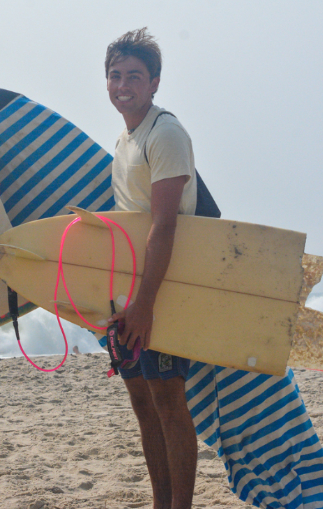

<div class="textcontainer">
<h3>Clyde Smith</h3>
<p class="margin"> </p>
<div class="center-row">

<p id="aboutme" style="font-size: 20px;">
I'm a junior living in Pforzheimer and studying integrative biology. <br> I live on Martha's Vineyard with my parents and two younger brothers. My hobbies include surfing, sailing, wood working, ceramics, and tennis. <br> For work in the summer I teach tennis, sell cutting boards, and wait tables.
</p>
</div>
<br>
I have been wood working since I was thirteen. I have made some boxes, some skateboards, and some bowls, but what I sell the most of is cutting boards. In the hope that they relate to this class slightly more than most, heres some photos.
<br></br>
<img src="./bowl.png" alt="Cherry Bowl" width="20%">
<img src="./endgrain.png" alt="Endgrain Boards" width="20%">
<img src="./tray.png" alt="Bettlebung Tray" width="20%">
<br></br>
I spent this past summer studying abroad in Kenya where I saw some amazing animals and spent a week climbing mount Kilimanjaro.
<br></br>
<div style="display: flex; gap: 10px;">
<video height="440" controls>
<source src="./kilamanjaro.mp4" type="video/mp4">
</video>
<video height="440" controls>
<source src="./Lion.mp4" type="video/mp4">
</video>
</div>